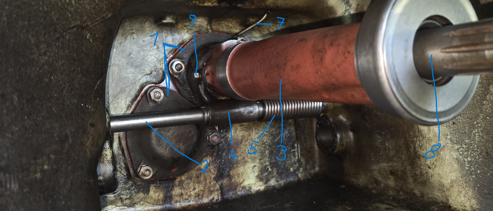

Anleitung & Zusammenbau der Ausrückmechanik im Kupplungsgehäuse

Die Dichtflächen am Gehäuse gründlich säubern. Das Lagerschild (1) zusammen mit einer neuen Papierdichtung und etwas Dichtmasse ansetzen und mit den Muttern gleichmäßig über Kreuz festziehen.
Die Ausrückwelle (2) seitlich durch das Gehäuse einschieben. Dabei die Rückholfeder (5) sowie die Ausrückgabel (4) mittig auf der Welle platzieren und in Position bringen.
Richte die Ausrückgabel (4) exakt auf der Welle aus. Ziehe die Klemmschraube (9) fest an, damit die Gabel spielfrei auf der Welle sitzt und gesichert ist.
Das Ausrückrohr (3) über die Antriebswelle (8) schieben. Das Ausrücklager (6) an der Vorderseite montieren und sicherstellen, dass die Betätigung über die Gabel leichtgängig greift.
Die Schmierleitung (7) anschließen bzw. alle Gleitstellen ausreichend fetten. Prüfe durch manuelles Betätigen der Welle (2), ob sich der gesamte Mechanismus ohne Klemmen sauber vor- und zurückbewegt.